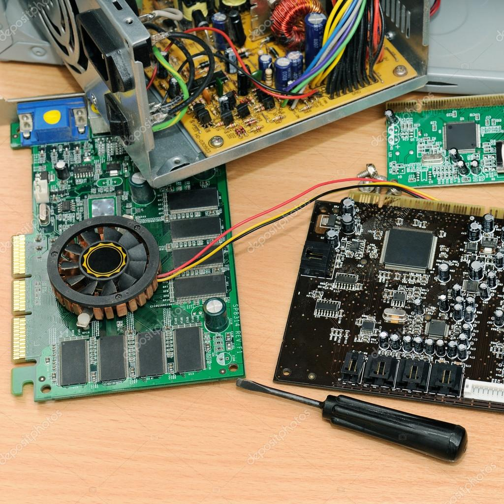
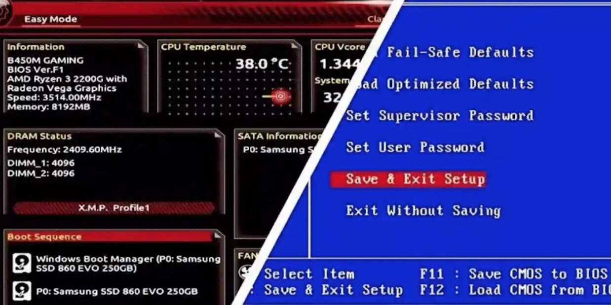

🖥️ Guía Completa para el Ensamble y Desensamble de un Computador
El mantenimiento preventivo de un computador es esencial para asegurar su rendimiento, prolongar su vida útil y evitar fallos futuros. Un paso clave de este proceso es el ensamble y desensamble del equipo. Aquí te presento una guía práctica, paso a paso, para hacerlo correctamente y de forma segura.
🔧 Herramientas Necesarias
- Pulsera antiestática (opcional)
- Destornillador de estrella
- Brocha suave y paño de microfibra
- Pasta térmica
- Aire comprimido (opcional)
- Pinzas plásticas (opcional)
🌀 Paso a Paso: Desensamble del Computador

- Apaga completamente el computador y desconecta los cables.
- Lleva el equipo a una superficie limpia y bien iluminada.
- Descárgate de electricidad estática.
Usa el destornillador para quitar los tornillos y desliza la tapa lateral del gabinete.
- Disco duro / SSD
- Memorias RAM
- Tarjeta gráfica
- Fuente de poder
- Procesador y disipador
Usa aire comprimido y una brocha para eliminar el polvo. Limpia la pasta térmica vieja con alcohol isopropílico.
⚙️ Paso a Paso: Ensamble del Computador

Coloca el procesador en el socket correspondiente asegurándote de que coincidan las marcas. Aplica una pequeña cantidad de pasta térmica en el centro del procesador.
Inserta los módulos de RAM en sus ranuras, presionando hasta que encajen con un clic. Luego instala el disipador sobre el procesador y asegúralo según el tipo de anclaje.
Fija la fuente de poder en su lugar y conecta los cables de alimentación a la placa base, discos y otros componentes. Instala los discos duros o SSDs en sus bahías y conéctalos.
Verifica que todos los cables estén bien conectados y que los componentes estén bien sujetos. Cierra el gabinete y atornilla la tapa lateral.
✅ Verificación del Ensamble
Conecta el cable de poder, el monitor, el teclado y el mouse. Enciende el computador y verifica que todos los ventiladores funcionen y que haya señal en el monitor.
Presiona la tecla correspondiente (generalmente DEL, F2 o ESC) para ingresar al BIOS. Revisa si el procesador, la RAM y los discos son detectados correctamente.
En el BIOS, busca la sección de monitoreo del sistema. Verifica que las temperaturas y voltajes estén dentro de los rangos normales.
Si el BIOS muestra todo correcto, procede a instalar o arrancar el sistema operativo desde un USB o disco. Realiza pruebas básicas como abrir programas o navegar para asegurar un funcionamiento óptimo.